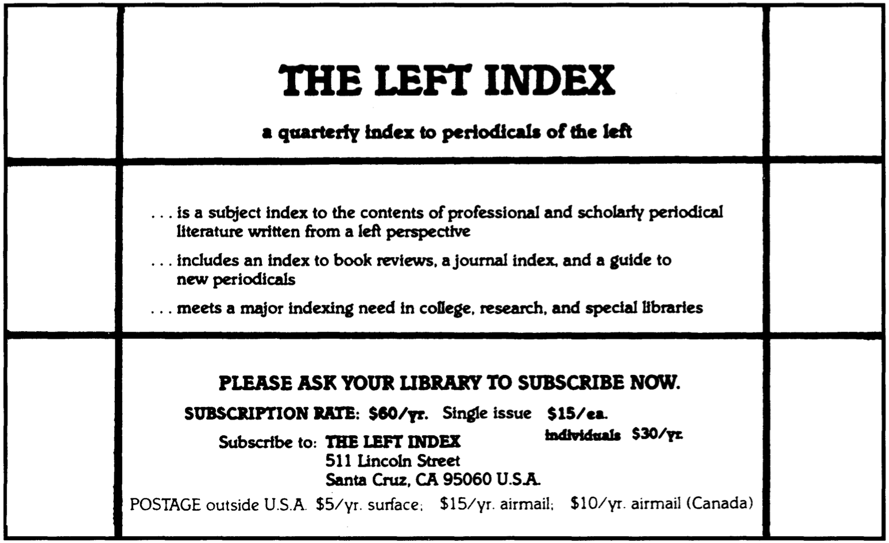

Sadie Plant :: 情境主义国际：一个令人震惊的被忽视案例

最近在伦敦、巴黎和波士顿举行的情境主义艺术和用具展览，使情境主义国际（SI）获得了前所未有的学术和文化形象。即使在该运动最活跃的时期，当它的许多想法和实践在1968年的法国事件中得到实现时，它也很少得到认真的评价；在某种程度上，这是因为它坚持认为它不可能用自己的术语来定义，但这也是由于其研究的独特质量和性质以及其论文对文化和学术机构的令人不安的影响。情境主义国际成立于1957年，直到1969年才出版了12期杂志Internationale Situationniste。1在对整个日常生活的批判中汇集了马克思主义和先锋派的传统，该运动发展了一个具有非凡范围和雄心的项目，超越了学科之间的传统分界，同时发展了对社会革命的公开承诺。
今天，人们仍然不愿意考虑情境主义思想的全部内容。这场运动仍然被认为是一个类似于超现实主义的艺术或文化流派，而它所涉及的哲学和政治问题在很大程度上被忽略了。下面的讨论在一定程度上纠正了这种忽视，指出情境主义思想与当代政治和哲学辩论的相关性，并对情境主义者工作的历史和知识背景进行了思考。
景观社会
战后的许多政治理论家在努力适应或取代马克思主义对资本主义的分析时，对“消费社会”进行了批评。马尔库塞、卡顿（Cardon）和列斐伏尔等人认为经济的蓬勃发展以及阶级和政治结构的明显变化是资本主义社会的真正和持久的特征；对一些人来说，例如马尔库塞，这涉及到对工人阶级的终结或转变的假设，必须对社会革命的想法进行彻底的修整。情境主义者同意，消费在战后时期具有前所未有的意义，但他们利用这一立场主张扩大无产阶级的概念，以包括所有经历了对其生活失去控制的人，无论是作为消费者还是商品生产者。他们将马克思主义的异化概念应用于日常生活的每个领域，并认为资本主义的发展意味着异化经验的手段、对象和强度的扩大。对情境主义者来说，没有任何经验领域可以摆脱资本主义生产和消费关系的渗透；资本主义社会的成员被降到了一个排除了他们参与的世界的旁观者的水平。
SI认为，每一种缺失和异化的经验都是由资本主义关系体系产生的，因此，尽管异化是阶级社会所特有的，但它似乎具有不可避免的、普遍存在的人类状况的所有属性。他们将资本主义描述为景观社会：在这个领域里，一切都从真实的经验中抽离出来，成为对自身的颠倒性表述。普通的姿态和日常生活的活动被包装成迷人的、诱人的；商品带有预先设定的角色和生活方式；甚至异议和批判也被商品化，卖给那些体验和生产它们的人。顺从者、虚无主义者和革命者都是在景观中可以选择的角色；被商品化和异化，他们有一种否认了内在意义的等同性。最平凡的姿态也被美化和强加：洗衣粉、糖果、饮料和家用电器的广告与使用它们的人的理想化形象以及他们这样做的家庭、关系和行为模式一起被宣传。
这使得人们越来越难以在不假设或拒绝所投射的图像的情况下使用广告商品；无论如何，人们都要参照它来行事。景观的机制具有如此强大的力量，以至于私人生活达到了被定义为被剥夺了奇观的地步；一个人逃离角色和类别的事实被体验为一种额外的隐私。’2同样，正如新学生获得了多余的纸张、笔、永远不会被阅读的书、传真机、合适的衣柜和唱片收藏一样，任何角色都伴随着一系列通常不需要的商品、态度和姿态，它们构成了参与的徽章，并承诺给一个人的生活带来一些现实。
情境主义者认为，这种被景观化的角色是作为终结疏离和异化而被提供的：消费这些商品，你就会真正融入这个世界。对异化的商品、角色和生活方式的消费是唯一可用的异化解药，而这意味着奇观的经验本质上是不令人满意的。即使在适当的商品中，生活仍然是空虚和不满足的。然而，商品和角色的扩散回应了人们对真正参与的渴望：商品被推销为通向真正社会参与的刺激/有趣/受尊重/有尊严的生活的关键。汽车、假期和洗衣粉承诺实现人们的梦想，并现实化幻想。这些商品很快就会被新的和改进的同类商品所取代，更多通过消费获得救赎的梦想被无望地追逐着。不管人们是否有能力获得这些商品，商品的扩散确保了为生存而工作的必要性得以维持，即使在没有物质需求的情况下。日常生活是贫困的（Everyday life is impoverished），而改善它的那些可用方法是同一异化关系体系的产物。
情境主义国际从一些先锋（avant-garde）潮流中产生，通过在日常生活中实现艺术体验来颠覆日常生活的平庸，而发展了达达主义和超现实主义的尝试。超越艺术与生活之间的区分长期以来一直是先锋派的梦想，达达主义和超现实主义都主张一种由所有人共同完成的诗歌，一个艺术性体验的环境，以及文化精英和专业化的终结。情境主义者将艺术的自由创造等同于社会的自由创造，并在他们对一个真正参与的世界的鼓动中发展了这些想法，在这个世界上，人们将控制自己的生活，并真正地“创造情境”（create situations）。
这些观点在居伊-德波的《奇观社会》中得到了进一步的发展，该书继承了Lukac《历史与阶级意识》中的许多观点，认为资本主义社会必须被看作并不是一个不可改变和不连续的给定物，而是一个由异化生产系统构成的相互联系的整体，并始终对历史变革保持开放。对奇观的历史性质的意识不断受到否定，这就排除了全面和结构性变化的可能性。德波写道，奇观把自己表现为历史的终结，而它实际上只是历史时间中的一个时刻，能够像其他时代一样发生转变和被取代。
德波认为，历史意识不可避免地由制度的紧迫性产生：正如马克思和恩格斯在《共产党宣言》中指出的那样，不断变化和创新是资产阶级关系的标志。小玩意、娱乐和生活方式的加速生产，意味着根本性改变的可能性越来越明显。在战后时期，新技术提出了一个非异化的劳动的世界的可能性，明显具备缓解物质和精神贫困的能力。这种情况需要发展前所未有的机制来掩盖和扭曲社会变革的可能性；对情境主义者来说，这是通过批判和异议（criticism and dissent）的商品化来实现的，在这种情况下，所有试图达到对结构性变革的可能性的意识的尝试在一开始就被挫败了。商品化的过程将经验事件、商品、角色和问题的所有方面以一种否认其特殊性的等价物呈现出来。新闻的产品（items）被呈现时，（他们）不会将其重要性考虑在内，问题的出现和消失显然是时尚产业的需要，即使是最具批判性的想法也会变得像天气预报一样平庸。
情境主义者将这种意义的丧失定义为恢复（recuperation），这个术语由Raoul Vaneigem的《日常生活的革命》推广，此后在关于批判性话语（critical discourse）的命运的辩论中得到了一定的认可。恢复不仅意味着批判的整合或合用，而且表明它实际上已开始打算从它打算否定的结构和机构中获取好处。使用革命性宣传（revolutionary propaganda）为啤酒（1960年代的Watney’s Red Label）或商业服务（NatWest的’Student 88’s campaign）等商品做广告是这个过程中最明显的例子，但这个术语也表达了更微妙的话语转移，并暗示批判性思想和实践受到与物质商品相同的疏离：脱离了它们的开发者的控制，它们被包装并以景观化的形式重新出售。
这种情况给批判性话语带来了巨大的困难。批判性思想或实践打算将自己置于与其对象的矛盾关系中，却发现自己处于一种内部关系中，在其中它（批判性思想或实践）的角色是支持性的而不是敌对性的。根据情境主义理论，恢复构成了资本主义关系体系在其作为物质改善的保障者的合法性时期之后使自己永久化的最微妙和最重要的方式之一。在实现了早期资本主义经济所依赖的基本物质需求的满足潜力之后，为了生存而工作的必要性随着商品全面侵占生活的所有领域而得以维持。由于要求商品的持续流通，资本主义社会把所有的经验和话语都带入这种异化的游戏中。不满被包装起来，并以徽章和T恤衫的形式返还给那些经历过不满的人；批判理论在学术机构的范围内进行，而学术机构提供了一种马尔库塞式的“压抑性容忍”（repressive tolerance）；而那些确定了可变关系的整体的批判则被其零散的接受和表述所分散和消解。
先锋的传统
这些都是构成情景主义遗产重要组成部分的先锋的传统所面临的问题。达达和超现实主义在其范围内不断呈现出他们对社会和话语关系整体的批判的整合，这两个运动都在为自治权（autonomy）和自我定义（self-definition）而不断战斗。例如，超现实主义者不断声称他们不是一个艺术运动，然而他们对整体的抨击却被转移到他们所反对的艺术和文学的结构中。这些问题决定了达达和超现实主义的进程；一切都是为了回避这种恢复，因为它削弱了他们的攻击并使之支离破碎。
在某种程度上，超现实主义者由于其实践的性质已经被限制在文化领域；他们现实化艺术的尝试的成功取决于社会革命的成就，而他们对社会革命充满同情，但对他们影响不大。他们主张超现实主义改造日常生活经验的计划从根本上说是无产阶级革命的计划，因此他们享受着与法国共产党的充满问题的关系；他们愿意作为超现实主义者在党内工作，但对PCF坚持在“革命之后”放弃超现实主义计划的做法不太接受。他们认为，对整个资本主义关系的颠覆应该在任何一条、每一条战线上（on any and every front）进行。
保持这种对整体的广泛反对的难度和必要性是情境主义者的主要关切。情境主义的许多理论是从先锋派使用的技术中发展出来的；当这些技术被用于艺术和文学领域时，情境主义者将它们应用于所有批评领域。detournement的实践，是一种转身或颠覆，这被发展为对抗恢复的最有效手段。达达主义者和超现实主义者提出的“现成物”（ready-made）为这种实践提供了很好的例子。马塞尔-杜尚声名狼藉的“泉”（Fountain），是一个翻转的小便池，并署名R.Mutt，由于其对创造力、原创性和形式等艺术价值的挑战而令人震惊。对杜尚来说，这个小便池说明了所有艺术本质上的现成物特性；他指出，每幅画都使用“现成”的材料，只是对熟悉的物品进行解构和重新排列。杜尚的另一个著名图像，长着小胡子的蒙娜丽莎，以最微妙的改动颠覆了神圣的天才化身。这种做法通过质疑原创性的概念破坏了剽窃的贬义，并通过展示向所有人开放的创造力挑战了天才和天赋的概念。它们为这种总是试图证明自己是一种脱离日常生活的专业化、精英化的尝试的艺术提出了一个持续的挑战。
情境主义者主张这种对所有既定的价值观、符号和关系的瓦解。达达主义者和超现实主义者已经玩过的城市环境，被情境主义者颠覆了，这种漂流式的行走，将城市的功能设计按照流浪者的愿望进行诗意的使用。这发展成了对与城市的主观关系的“心理地理学”（psychogeographical）研究，促进了对环境改造的可能性的许多想象力的探索。Chtcheglov的“新城市主义公式”（Formula for a New Urbanism）宣称“我们在城市里很无聊”，并提出了一个“每个人都住在自己的大教堂里”的世界，在一个可变化的环境中，与居民的愿望和睦发展，有利于“情境的构建”。这种猜测进一步推动了情境主义者的意图，即把最疯狂的梦想带入可能的领域，”用欲望的政治宣传使市场充溢“（flood the market with a propaganda of desire），提高远远超出资本主义关系体系内可实现的那个期望值。3
这也是情境主义对诗歌作为功能性语言的detournement的真实写照，在第一次世界大战期间，达达主义对官方宣传的颠覆就是一个例子，当时报纸文章被切割和重新排列，字体的变化也很疯狂，出版的照片和广告的合成照片和拼贴画都伴随着“Dada”二字的重复，其无意义本身就是对文化惯例的detournement。超现实主义对自动写作的参与也是一种类似的颠覆；虽然情境主义者不信任超现实主义者所遵循的弗洛伊德原则，但他们对超现实主义的实践感兴趣，因为它们是在艺术、文学和社会惯例之外的原则下进行的。字母主义国际（The International Lettrists）是组成情境主义国际的团体之一，他们曾对连环画进行过解读，而情境主义者则乐于在漫画中加入革命的对话。他们总是强调利用现有的材料来达到其他目的，而不是它本来的目的，情境主义者制作了大量的插画，以说明“在景观的废墟上建立一个新世界的可能性”。
情境主义对先锋艺术和马克思主义的发展都不是不加批判的。他们赞扬前卫的技术和策略，反对将其局限在文学和艺术领域，而在马克思主义方面，他们拒绝先锋主义（vanguardism），主张建立工人委员会和直接参与的制度。SI始终是小规模的，它并不自诩为一个雏形的革命组织。它的成员是宣传员，致力于“一场必须涌现在迄今为止一直被掩盖在革命动荡之外的中心地带的新的革命：对日常生活的征服。我们只组织引爆：自由的爆炸必须永远摆脱我们及任何其他的控制。”4 情境主义者将自己定义为“最后的专家”，并决心不成为任何革命运动的明星，为他们的思想而不是为自己寻求恶名。这条路线导致了一系列的排斥和内部争论；some of these were exaggerated by Debord’s assumption of unofficial leadership，但大部分是情境主义者试图避免重新成为“景观化的”革命者、知识分子、艺术家或任何其他零散和专门的角色的后果。
这种对保持有效批判作用的专注无疑造成了该运动的晦涩难懂：他们在回避分类和整合方面是如此成功，以至于他们在很大程度上被忽视了。尽管如此，情境主义者对批判性话语在他们所针对的结构中的脆弱性的认识，使他们的许多见解具有不同寻常的品质。情境主义者也许是唯一对1968年的革命形势不感到惊讶的理论家。他们不相信工人阶级的相对繁荣预示着它的终结的论点，他们认为生活正变得越来越贫穷：”现如今的变得富有是变得拥有最大数量的贫穷。“情境主义坚信，这种贫困不会不被那些经历过它的人所质疑，这让那些在事件发生之前和之后认为它们是不可接受的、不可想象的人感到困惑。德波曾与和他一起学习过的亨利-列斐伏尔在谈到这个团体时写道：”他们真的以为在某个美好的日子或某个决定性的夜晚，人们会彼此对视并说：’够了！我们已经厌倦了工作和无聊！让我们结束它们吧！‘然后他们就会进入永恒的节日和情境的创造？我们只是指出了已经存在的东西。”7的确，在1968年出现的罢工小册子、实践和理论上的preoccupations中，情境主义者在前十年培养的政治态度以一种前所未有的明晰度出现了。
这里不是回顾1968年事件的地方；1988年是怀旧反思的一年，尽管许多周年纪念的讨论成功地掩盖了更多的东西，但仍有许多可靠的描述。8然而，事件的一些重要方面仍然被忽视：学生的影响被置于工人的影响之上，尽管总罢工持续了三个多星期，并有1000万工人参加。当时的繁荣状况也经常被过分渲染。法国工人是欧洲工资最低、税率最高的国家之一，除了物质上的匮乏外，工人们也经历着情境主义者所确定的普遍贫困（general impoverishment）。然而，在目前的背景下，情境主义者在事件引爆中的作用的重要性是最引人注目的。
在大卵石之下……
《景观社会》和《日常生活的革命》出版于1967年，当时该运动已经在1966年的斯特拉斯堡丑闻中取得了一些实际成功。斯特拉斯堡的学生与SI合作，制作了一本小册子《论学生生活的贫困》，对学生作为资本主义社会的被动旁观者的角色提出了严厉的指控。该小册子由学生会资助，其作者因其温和派成员的冷漠而被选入学生会，引起了当局的愤怒，并引发了一场关于滥用学生资金的重大法庭案件。具有讽刺意味的是，法官的总结（至今仍发表在该文的大多数新版本中）在谴责中相当准确：“对他们日常生活的单调感到困惑”，“拒绝一切道德和约束”，他宣称，“这些愤青毫不犹豫地赞扬盗窃、破坏学术、废除工作、彻底颠覆，以及以‘不需认真的快乐’（unlicensed pleasure）为唯一目标的世界性无产阶级革命”9 。
《论学生生活的贫困》的论点为接下来一年法国大学的鼓动定下了基调，在罢工、占领和骚乱的时期，当戴高乐前往德国寻找愿意进入巴黎的忠诚军队时，情境主义的分析似乎完全合适。在一个强大的群众革命运动的出现中，“不可想象”的事情发生了。巴黎的涂鸦宣称：“他们在购买你的幸福。偷走它！”，“我把我的欲望当作现实，因为我相信我欲望的现实”，“快跑吧！旧世界在你身后。”10这种将超现实主义注入革命宣传的做法，表明了这一时期对以前分离的关切的想象性混乱。社会经验的所有方面都受到质疑：足球运动员要求解雇他们的经理；音乐家呼吁“狂野和短暂的音乐”；医生和精神病护士被要求释放他们的病人。大学校园和工厂被“自我管理”的呼声所颠覆；汽车成为街道上的路障，颠覆了城市的常规；马路上的大卵石成为对抗CRS的最终“现成品”武器；从被占领的奥德恩剧院取来的服装给革命者提供了与警察一样的特殊服饰。
情境主义者认为这些事件是前卫实践的实现，是对价值观和意义的全盘质疑，也是工人阶级抵抗、破坏和组织形式的传统的顶点。占主导地位的结构是议员制，大多数罢工在没有官方工会支持的情况下持续进行。PCF及其工会，即CGT，对工人的行动充满敌意；他们反复警告不要有挑衅者，并且不顾工资并不是罢工者最关心的问题这一事实，通过谈判大幅提高工资，鼓励工人最终复工。这一时期的所有文件都表明，不满情绪的主要原因是整个法国社会中的失去控制和缺乏（人的）参与：这些事件表明了参与的必要性和现实经验的直接性，以及在整个资本主义关系中实现革命的意愿。这些态度对PCF和工会以及政府来说都是危险的。
对五月事件中僵化的权威和等级制度的敌意，后来在后结构主义流派中得到了哲学上的表达，其主导思想是拒绝理论权威、真理的有效性以及稳定和可获得的现实概念。让-弗朗索瓦-利奥塔（Jean-François Lyotard）曾在1950年代参与“[[社会主义或野蛮]]”（Socialisme ou Barbarie）团体的运动19，并在1968年积极参加322运动20（Mouvement du 22 Mars），他在对辩证法思想的批评中经常提到五月事件，而福柯对自主抵抗无穷的权力和知识关系的主张，也得益于当时发展起来的组织形式11 。
他们对五月事件所揭示的统治形式的普遍性和多重性的反思，导致了这样的论断：批判理论和实践总是处于与它们的对象共谋的内部关系。批评的工具和技术“总是已经”被主导的关系体系所定义，因此，在与对象的逻辑矛盾中产生批判的辩证概念是多余的。他们还认为，对整体关系的辩证识别是站不住脚的，这表明像马克思主义这样的“宏大叙事”（grand narratives，译者注：利奥塔在后现代状况中提出的概念）并没有揭示建立在特定生产方式上的系统的现实，而是建构并强加给它。不存在社会整体，因此也不可能有社会革命。
在福柯的作品中，并不排除对他所确定的权力网络的“一般效果”的改造。但他的工作的政治含义是，必须培养抵抗的策略，以揭露和破坏具体的权力关系，虽然它们是相互联系的，但并不是由经济或任何其他基础决定的。在资本主义内部经历的异化并不是它所特有的；相反，它与现实的话语性质联系在一起。话语构成了现实，而1968年的革命者所渴望的原始直接的经验则永远被移除和缺席。巴黎墙上的涂鸦使大卵石下的海滩闻名于世，这是一个幻觉；没有海滩，也没有那个根本上异化了的人们的话语现实能实现的革命后的天堂。
表面上相似，却深度不连贯
后结构主义的许多政治含义并不特别创新：没有社会整体可供批判的概念在所有资产阶级理论中都有其先例和当代的表现。然而，这一立场的哲学基础需要一些考虑。辩证法思想的假设和先决条件已经被后结构主义和整个后现代主义流派所质疑；界定基本结构、真理和意义的可能性，以及确定历史目的、方向和现实的可能性，都被严重破坏了。这些都是复杂的问题，对这些问题的关注已经超出了本次讨论的范围，但情境主义理论与后结构主义提出的问题之间的关系可以很简单地确定。
SI对维持批判话语的艰难的分析，以及后结构主义对“批判危机”的认定，有着许多共同的基础。上面考虑的许多先锋技术（avant-garde techniques）已经在后结构主义哲学中找到了它们的路线。利奥塔的漂移（drifting）思想，不接受真理价值，并破坏那些接受真理价值的话语的合法性，是情境主义派的漂移（derive）的另一个说法；同样，支撑他的作品的语言和欲望的多元性是超现实主义和情境主义对游戏、快乐和冒险的重视的发展。福柯的作品不断回到破坏、抵抗和反话语的可能性的概念，所有这些都是由达达主义者在他们所攻击的文化价值方面发展出来的。
此外，先锋派对批判的艰难的认识在后结构主义中重新出现。揭开社会和话语生活所有领域的结构和支配关系的必要性是这两个派别的主要关注点。两者都发展了对政治组织形式和假设的批评，以及对批判话语与它所反对的结构相结合的有效性的批判。福柯以先锋派和情境主义者为榜样，决心回避对其生活和工作的分类，而所有后结构主义的作品对稳定和石化现象（petrification）的反感都表现在对理论的敌视上。
如果说这种遗产的痕迹出现在整个后结构主义中，那么情境主义国际的轨迹可以在让-鲍德里亚的作品中读到，他对“超现实”（hyperreality）的假设将景观发展到没有任何现实概念可以与之对立的程度。鲍德里亚认为，现实的话语性是完整的；福柯所使用的权力概念和利奥塔的欲望概念被批评为其作为预设性建构的地位，其强加的也是非法的。这就导致了意义的缺失，波德里亚的立场排除了任何批判的有效性，因为没有任何结构、价值或目的可以让它继续进行。景观不再是对现实的异化的颠覆，而是对现实的完全替代。
和情境主义者一样，鲍德里亚认为资本主义社会提供了一种假性参与的形式，在这种形式中，只有参与的表象被维持。情境主义者以有意识地参与经验建构的论点来反对这种参与，而鲍德里亚则认为，这种 “真实的”（real）参与不可能有超越目前被赋予的现实或意义。对真实经验的丧失和缺失的感觉并不是资本主义所特有的；因为只有外表是“真实”的，只要对从未存在过的现实的哀叹继续下去，异化的体验就会持续下去。
鲍德里亚有效地将情境主义理论推向了一个极端，他认为如果景观是包罗万象的，以至于用德波的话说，“现实在景观中升起，只有景观才是真实的”，13就不可能有任何批判性话语。鲍德里亚认为，“沉默的大多数”（silent majorities）的被动和脱离是仅次于反抗死亡的有效性。任何识别和否定现有事态的积极尝试都被破坏了。他们根据什么理由，以什么理由提出“更真实”的历史现实？他们在什么基础上确定阶级？将社会定义为一个由经济体系构成的统一整体的做法又是如何合法化的？如果鲍德里亚承认他与情境主义国际的联系，他的批判就会是这样的主旨。
后结构主义哲学家以批评在其对象的内部关系中产生的不可避免性来回答情境主义者所确定的批评话语的恢复性问题。他们认为，如果现实是可话语的，任何话语都会参与它所描述或批评的世界的建构。谈论一种话语被整合或被收编，就是错误地认为它曾经拥有一种自由或现实，而这种自由或现实后来被取消了，就好像批判性话语一开始处于一种对立的关系，后来才承担起一种共谋的关系。从这个角度来看，对恢复（recuperation）的关注是非常错误的。一个将自己与主导结构对立起来的话语“总是已经”融入了它错误地定义为整体的一系列不连续的关系中。任何价值或意义都不能超越在现有话语的复杂性中所定义的真理。
后结构主义哲学家从这个论点中得出的含义是，辩证的批评是不可能的，因为它所要求的批评距离是无法实现的。异化不能被批判，因为它必须反对的真实性是没有意义的。但这一立场假定，某种阿基米德点，在它所反对的结构之外，不受其玷污，是采用批判性视角所必需的。辩证批判的实践者一直承认，表达批判的语言和价值是由现有的社会和话语关系的整体性所决定的。例如，情境主义者认为，这种情况加强了对所有现有概念和价值观的批判态度的必要性，因为这些概念和价值观必然是必须破坏现有现实的工具，必须用来反对它们所发展的结构。
批判理论和实践不是凭空变出它的技术和材料的，而是颠覆和重新安排那些已经存在的东西。它的对抗性是从它在现有的现实中所感知到的矛盾中发展出来的，比如在一个特定的社会中所提供的东西和它可能采取的东西之间的差异。景观所提供的自由、选择和参与是对这个社会所产生的要求和欲望的回应。由于这些要求和欲望没有得到满足，商品化就会加速；新的欲望产生了，而这些欲望的满足再次受挫，异化的经验就会持续下去。对这样一个社会的批判并不是由任何自然的欲望或真实的人类状况的主张来推动的；可以用来衡量现有社会的价值、需求和欲望的是那些它自己推动的东西。批判性话语不能假装对它所处的全部异化关系有免疫力，但它可以让自己同时参与颠覆和揭露给予批评思想的异化性接受。“很明显”，德波写道，“任何思想都不能超越现有的景观，而只能超越关于景观的现有的思想（existing ideas）。”
识别和批判构成现实的关系的能力，取决于对现实、意义和真理的某种概念的识别。这对于任何话语的维持都是至关重要的，不管是批判性的还是其他的；此外，即使是这里所考虑的后结构主义哲学家也不能完全避免这一立场。利奥塔和福柯不断回到话语强加给自己的某种现实（reality）概念，而鲍德里亚的超现实（hyperreality）如果没有对现实的某种参照，即使这被视为一种不存在或不可能，也是毫无意义的。这对于那些表面上看是激进主义而同时又破坏了其政治主张的合法性的后结构主义著作来说尤其如此。例如，当鲍德里亚谈到群众的消极（passive）抵抗时，他没有留下任何手段来定义他们所抵抗的关系或其抵抗本身的目的或基础。同样，福柯认为，一种保留了现实的特殊性和直接性的反话语是可能的，但他发现不可能确定这种抵抗权力及知识关系的原因，因此它成为一种纯粹的被动（reactive）和无意的反应。
炒作与遗产
不管这些意义和目的的问题，后结构主义哲学已经在英国政治理论中找到了一席之地。今日马克思主义》对“新时代”（new times）的描述强调了福柯作品的政治意义，并对鲍德里亚的哲学游戏给予了一定的信任。 16 福柯的作品为自主斗争提供了合法性，并拒绝了马克思主义的“宏大叙事”，它提供了一种关于不连续、分裂和分散的哲学，以支持“后福特主义”（post-Fordist）经济的概念。然而，它破坏了社会整体转型的可能性和必要性，在表象和现实，或异化和真实经验之间进行争论，后结构主义使这种区分崩溃，没有理由选择、评估甚至解构一种现象或关系而不是另一种。按照他们自己的标准，后结构主义关于社会和话语关系的主张是没有合法性的。后结构主义与它所观察的关系缺乏任何批判性的距离，它肯定的是现有的关系。它看到了边缘化和分裂，并不可避免地假设这些不仅仅是某个特定历史时刻的偶然特征，而是当代关系所基于的原则。某种形式的异化是人类经验的不可避免的属性。虽然后结构主义者确实没有理由不这么认为，但他们也没有任何理由认定这是事实。
对情境主义者来说，真实经验的一瞥存在于艺术表达、政治斗争和自我陶醉的游戏的时刻；异化是去除和缺席的经验，其超越性在有意识地创造情境的实践中得到体验。这些缺失被后结构主义理论化为不可避免的。但是，在将真正参与的时刻扩展到经验的所有领域方面没有任何物质障碍，情境主义者试图通过区分景观社会所提出的要求与它们的实现来克服其政治和哲学障碍。他们攻击它的宽容，认为它为可能破坏它的思想和实践提供了一个幻想的和衰弱的避难所；它的选择被景观再现异化的必要性所限制而收到攻击；最重要的是，它通过将批判与它所倡导的实践分离并将其置于景观的僵化的非历史主义中，使批判景观化或商品化。
批判总是可以被恢复，但其商品化的形式也可以被颠覆和重新获得。批评的价值、实践和概念化是由社会和话语关系的主导组织所预先决定的，但这并不意味着没有可能利用这些结构来超越它们目前所使用的目的。欲望、需求和满足它们的资源已经存在；它们以异化但可识别的形式，在景观中被推广。被否认的是对其真实实现的可能性的历史意识。
支持这种意识的情境主义宣传可能没有大众读者，尽管德波声称，该运动的作品被学术马克思主义者谴责为无法阅读，但工人们能广泛阅读并很容易地理解，他们”对这个主题非常了解，能够从《景观社会》的那些文字中受益。“17然而，许多哲学话语都归功于它的terms，它对后来文化运动的影响被那些追求其成果的人广泛承认。熟悉SI的Malcolm McClaren和Jamie Reid为朋克注入了情境主义的意象及对丰富的独立出版的无政府主义传统的热情，而Tony Wilson的曼彻斯特俱乐部，Hacienda，从Chtcheglov的“新城市主义公式”中使用了SI的名字和SI的那些原始意图。
情境主义思想的一些最有趣的发展表明，该运动过于关注创造力、自发性和欲望等中介，因此，新的基座，尤其是SI本身的基座，被它所破坏的基座所取代。《Variant》（译者注：一份激进杂志，全刊pdf下载见本站的Lib）、《Vague》和多份报纸《Smile》等杂志提供了情境主义者的艺术和文化关注的批判性发展，而位于利兹和格拉斯哥的《Here and Now》则追求他们对社会和政治批评问题的认识的更贴切的方面。虽然这些倾向经常拒绝，当然也旨在取代情境主义的思想，但它们继续推进运动的尝试，以揭露和回避主流文化中激进思想的恢复。
ICA的情境主义作品展当然构成了这种恢复，像这样的文章也可以被看作是这样做的。但仅仅讨论一个批判运动并不一定会破坏它；重要的是，实践并没有脱离理论。只要那些参与这种讨论的人继续从事他们在理论上提倡的颠覆活动，那么类似于围绕马克思主义的情境主义产业的问题就很容易避免。正如Vaneigem所宣称的：
是什么阻止了我们关于日常生活建设的言论被文化机构恢复……是这样一个事实：情境主义思想只不过是成千上万的人不断尝试的行为的忠实发展，试图阻止我们在接下来的每一天虚度超过24小时。18
当后结构主义哲学和后现代主义艺术意识到对他们所否认的批判传统的亏欠时，它们所拥有的一些智力上的可信度就会丧失。这些流派不能提供所有话语所需要的意义、目的和对现实的把握，如果它要被用于理解和改造经验的任何批判性用途。情境主义理论并没有摆脱任何批判性话语所面临的合法性问题，但它确实代表了克服这些问题的少数认真尝试之一，并为那些仍然愿意解决当代社会的复杂性的人提供了宝贵的遗产。
- 1.The twelve issues of the journal are collected in Internationale Situationniste 1958-1969 (Champ Libre, Paris, 1975), and substantial excerpts are collected in the Situationist International Anthology, edited and translated by Ken Knabb (Bureau of Public Secrets, Berkeley, 1981). The edition which preceded Ken Knabb's anthology was Leaving the Twentieth Century: The Incomplete Work of the Situationist International edited by Christopher Gray and published in London by Free Fall Press, 1974. A full index, bibliography, list of members, and chronology of the movement is published by Jean-Jacques Raspaud and Jean-Pierre Voyer, L'Internationale Situationniste: protagonistes, chronologies, bibliographie (avec un index des noms insultes) (Champ Libre, Paris, 1971), and a thorough history of the movement from 1952 to 1972 is presented in Jean-Fran~ois Martos, Histoire de L' Internationale Situationniste Editions Gerard Lebovici, Paris, 1989). The major texts published by the movement are Guy Debord, The Society o f the Spectacle (Black and Red, Detroit, no date), and Raoul Vaneigem, The Revolution of Everyday Life, trans. Donald Nicholson-Smith (Left Bank Books and Rebel Press, no place, 1983). ↩
- 2.Raoul Vaneigem, 'Banalites de Base', Internationale Situationniste No. 8, 1963, translated as 'Basic Banalities' in Situationist International Anthology, op. cit., p. 129. ↩
- 3.Ivan Chtcheglov, 'Formulaire pour un Urbanisme Nouveau', Internationale Situationniste, No. 1, 1958, translated as 'Formula for a New Urbanism' in Situationist International Anthology, op. cit., pp. 1-4. ↩
- 4.'L'Operation Contr-Situationniste dans Divers Pays', Internationale Situationniste, No. 8, 1963, translated as 'The Countersituationist Campaign in Various Countries, op. cit., p. 113. ↩
- 5.'Basic Banalities', op. cit., p. 92. ↩
- 6.'Le Commencement d'une Epoque', Internationale Situationniste, No. 12, 1969, translated as 'The Beginning of an Era' in Situationist International Anthology, op. cit., p. 228. ↩
- 7.Ibid., p. 227. ↩
- 8.The eyewitness account published by Solidarity in 1968 and reissued by Dark Star Press and Rebel Press in 1986 remains invaluable. Rene Vienet provides a fascinating account of the Situationist involvement in the events in The Enrages and the Situationists in the Occupation Movement, MayJune 1968 (Tiger Papers Publications, York, no date). ↩
- 9.On the Poverty of Student Life, considered in its economic, psychological, sexual, and particularly intellectual aspects, and a modest proposal for its remedy has been published in numerous editions; the most readily available is issued by Black & Red, Michigan, 1973. ↩
- 10.For a thorough collection of Parisian graffiti, see WaIter Lewino, L' imagination au Pouvoir (Le Terrain Vague, Paris, 1968). ↩
- 11.These ideas can be found in Jean-Fran~ois Lyotard, The Postmodern Condition, A Report on Knowledge (Manchester University Press, 1984), and Driftworks (Semiotext(e), New Y ork, 1984); Michel FoucauIt's Power/Knowledge, translated by Colin Gordon, Leo Marshall, John Mepham, Kate Soper (Harvester, Brighton, 1986) contains the central themes discussed here. ↩
- 12.Jean Baudrillard's development of these ideas can be traced in The Ecstasy ofCommunication (Semiotext(e), New York, 1988); Forget Foucault (Semiotext(e), New York, 1987); and In the Shadow of the Silent Majorities (Semiotext(e), New York, 1983). ↩
- 13.The Society of* the Spectacle, op. cit.,* para. 8. K ↩
- 14.eith Reader refers to the' burglary operation' conducted by Baudrillard on the Situationist thesis in Intellectuals and the Left in France Since 1968 (Macmillan, London, 1987), pp. 131-32. ↩
- 15.The Society of the Spectacle, op. cit., para. 203. ↩
- 16.See, for example, 'Guide to New Times, A user-friendly guide to the new world of the 1990s', Marxism Today, October 1988, p. 5, and Marxism Today, January 1989, special issue on postmodernism which includes an interview with Jean Baudrillard. ↩
- 17.Guy Debord, Preface to the Fourth Italian Edition of 'The Society ofthe Spectacle' (Chronos, London, 1979), pp. 7-8. ↩
- 18.'Basic Banalities', op. cit., pp. 122-23. ↩
- 19.利奥塔是激进团体社会主义或野蛮的阿尔及利亚分支的领导成员，并对法国占领阿尔及利亚持积极批判态度。 ↩
- 20.译者注：3月22日运动来源于一场被法国官史称为“口角”的冲突，在农泰尔文学院中，社会学系三年级学生的红头发青年红色达尼首次获得上百上千名学生的关注与追随。红色达尼曾在2月29日这一天，率领百余名青年大摇大摆地强占了学院行政楼，并大声叫喊：“两分钟！两分钟之内不恢复供电，我将占领整个学院！”。一个多月来，在农泰尔文学院，一本印有“3月22日运动”标记的小册子在学生宿舍里流传着。它的内容包括了《国际歌》歌词、团体会议公报以及一篇短文，《催泪瓦斯的自制方法》。“3月22日运动”成立一个多月后，4月27日，科恩-本迪遭遇了警方的传讯。但在仅仅12个小时之后，科恩-本迪就被释放了。 加塔利也参与了3月22日运动。德勒兹曾在《荒岛》的群体的三种问题中评价3月22日运动：问题在于建构一种革命的主体性，相对于这种主体性而言，不适合再问经济、政治、力比多等决定性因素，哪一种是首要的，既然这种主体性横贯了传统上分离的秩序；问题在于抓住这个断裂的点，恰恰在各个点上，政治经济学与力比多经济学不再合二为一 。因为无意识不再是别的东西，而是群体主体性的秩序，这种秩序把各种爆炸机器引入了所谓的意指结构以及因果链，并迫使它们敞开，从而解放它们所隐藏的潜能以及在断裂的影响下而即将到来的实在。在这一点上，3月22日运动仍是典范性的；因为即便它是一种不充分的战争机器，那么它至少令人赞叹地作为分析的、欲望的群体起作用，这一群体不仅以真正的自由联想的形式抓住了话语，而且能够“把自己建构为一个由大学生和青年工人构成的、数目可观的大众的分析者 ”，它没有先锋队的或霸权的抱负，只是容许各种抑制（inhibition）的移情与解除。其中分析与欲望最终走到了同一侧，正是欲望最终引导着分析，这种现实的（en acte）分析充分显示了主体群体的特征，而屈从群体在精神分析之于封闭环境的简单“应用”的法则下继续生存（通过其他方式来使家庭成为国家的继续）。力比多本身的经济与政治的内容、政治经济领域的力比多与性的内容，这整个历史的漂移 ，只有在开放的环境中、在主体群体中才会暴露出来，一种真理从那儿出现了。因为“真理不是理论、组织”。这不是结构和能指，而是战争机器及其非意义。“真理，只有当它出现的时候，理论与组织才不得不摆脱它。自我批评，总是由理论与组织来加以实行，而不是由欲望来加以实行。” ↩